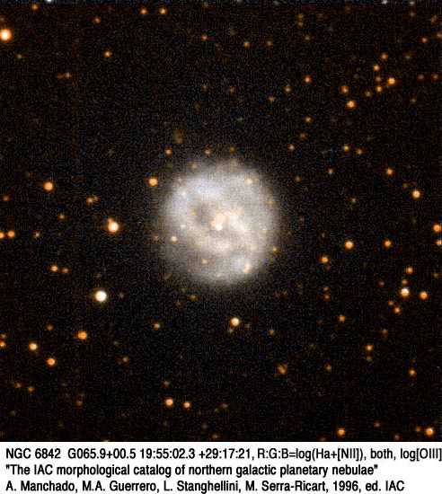
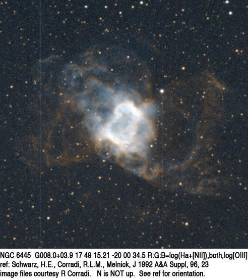

NGC 6445, the Box Nebula
- Name: NGC 6445
- Aliases: PK 8+3.1 = ESO 589-PN9 = PN G008.0+03.9 = Box Nebula
- RA: 17h 49m 15.3s
- Dec: -20° 00' 34"
- Class: 3b(3)
- Size: 38" x 29"
- Mag: V ~ 10.9
William Herschel discovered NGC 6445 on 28 May 1786 (his 569th sweep) and recorded "pretty bright, small, irregular figure." Due to it irregular shape, he placed in his class II ("faint nebulae") instead of his class IV ("planetary nebulae")
Lord Rosse (or observing assistant William Rambaut) examined it with the massive 72-inch speculum reflector on 11 Mar 1848. It was described as a "curious circular-shaped neb with a large dark spot at one side [f side in a diagram], around which is a close cluster of well defined vS stars." A more detailed visual description was provided in 1887 by American astronomer Frank Muller using the 26-inch Clark refractor at the Leander McCormick Observatory in Virginia. Muller noted "Two nuclei forming an elliptical nebula, elongated 150°, largest diameter 26", northern nucleus brighter. A sketch shows each nucleus to be elongated in the direction 90° +/-, the center being almost devoid of nebulosity. The nuclei are entirely separated from each other except by very faint nebulosity, and are of the 12.5 magnitude."
To study the various forms of planetary nebulae, Curtis Heber used the 36" Crossley reflector at Lick Observatory to photograph all known planetaries north of -34° declination. His pioneering results were reported in the 1918 Publications of the Lick Observatory, and he noted "...the brighter portion [of NGC 6445] is a very irregular "square-shouldered" ring 38" x 29"; from this extend very faint ring-like ansae in PA 50°-230° [NE to SW]..." This captures the appearance very well.

By the way, you may find NGC 6445 referred to as the "Little Gem", which could be an appropriate nickname. But that moniker was originally applied by John Mallas to NGC 6818. So, to avoid confusion I'm calling it the "Box Nebula".
Here are two observations with my 24-inch and 18-inch scopes ---
24-inch: This highly structured planetary was observed using 500x. NGC 6445 has an unusual rectangular shape, elongated 3:2 NW-SE, with dimensions ~45"x30". The planetary is brighter in fairly narrow strips along the four sides, creating an annular appearance. The short northwest facing side is slightly brighter and contains a bright knot or section near the middle. In addition, a faint knot is at the north vertex. Another bright knot is at the east vertex and either a faint knot or star is at the south vertex. The short southeast facing side is sharply defined and quite straight. A very low surface brightness glow can be seen outside (east) of the eastern vertex. In addition, with careful viewing an extremely faint outer shell or loop is outside the long southwest facing side, connected at the two vertices along this side. A mag ~15.5 star is just outside the midpoint of the loop. The outer shell or loop on the northeast side was not seen.
18-inch: NGC 6445 is a fascinating planetary at 435x. The overall shape is rectangular with the longer sides oriented NW to SE. Both ends are noticeably brighter giving an annular appearance. The NW end is slightly brighter and irregular in surface brightness with a brighter spot or two. The rim at the northwest end is slightly bowed out and has a well-defined boundary edge in the interior. The rim at the southeast end of the planetary is unusually straight and well-defined. With averted vision it appeared to extend slightly beyond the main body of the planetary. The bright lobe at this end is bar-shaped and extended SW to NE in the direction of the minor axis.

GIVE IT A GO AND LET US KNOW!